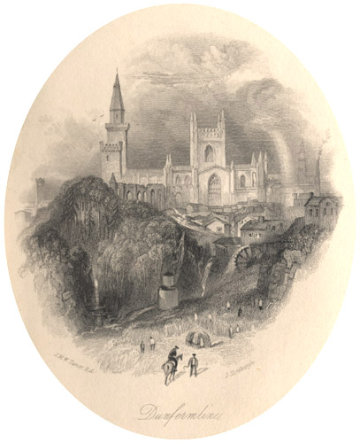

|
 Dunfermline, engraved by John Horsburgh after J.M.W. Turner (1836).From: The Prose Works of Sir Walter Scott, Bart. Vol. 22 (Edinburgh: Cadell, 1836). After Malcolm III of Scotland (or 'Malcolm Canmore') moved his court there c. 1065, the city and royal burgh of Dunfermline was the nation's capital for over 500 years. Malcolm's second wife, Margaret, founded a Benedictine Priory which was elevated to the status of Abbey in 1128. The Abbey contains the tombs of a number of Scottisn monarchs including Robert the Bruce.
|